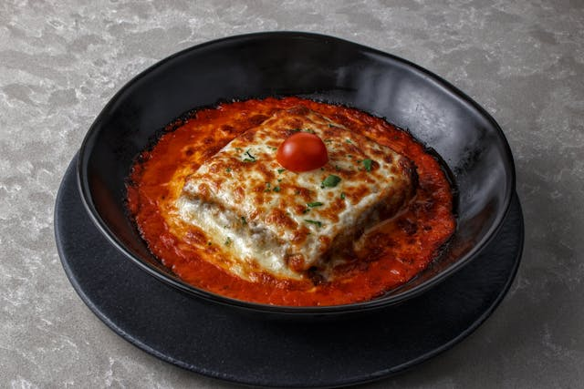

Lasagna

Authentic Homemade Lasagna Recipe
This Homemade Lasagna Recipe is perfect for a family dinner and any ocasion. Lasagna is a great meal and easy to make at home. Enjoy making this recipe with basic ingredients at home.
Ingredients:
- Ricotta Cheese
- Parmesan Cheese
- Italian Sausage
- Ground Beef
- Italian Seasoning
- Pasta Sauce
- Marinara Sauce
- Frozen Spinach
- Lasagna Pasta
How to Make:
- Boil Pasta: boil noodles in a pot of salted water.
- Prepare Meat Sauce: cook sausages and ground beef. Drain and add pasta sauce.
- Combine Cheese Mixture: stir cheese mixture together with sauce in a bowl.
- Add Layers and Bake: layer meat sauce, and cheese with lasagna noodles and bake until golden brown.
- Let it Rest: 15 minutes before cutting.
Home